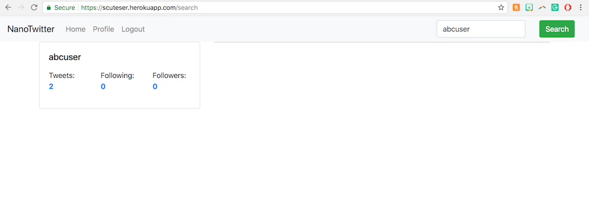

PROJECT SUMMARY
NanoTwitter (nT) is a baby version of Twitter designed as a platform for experimentation with scaling issues.
The objective of the Nanotwitter project was to give us hands-on experience designing a simple system which will expose and exercise issues of scale.
There was a lot of room for creativity.
While we did have some core instructions, we were allowed to use some interesting alternatives too in this project.
- Lorem
- Dolor
User signs up

User logged in

Update profile

Like/Unlike/Retweet

Search

Post a new tweet
Posted tweet appears

Follow another user
Unfollow another user
TECHNOLOGY DESCRIPTION
On Heroku, imitate dyno scaling using multiple free applications instead of multiple dynos in a single application.
Our Solution:
- Primitive load balancer to distribute requests.
- Periodic database updates, caching, and local read/writes.

Results
What Loader.io has to say...
- 23,634 REDIRECTS
- 2,000 CLIENTS
- 2,252 RESPONSE TIME
- 23,634 SUCCESSES
- 145 TIMEOUTS
TEAM
Shu Lin Chan
Priyanka Grover
James Wang
THANKS FOR VISITING
Feel free to get in touch. Cheers!